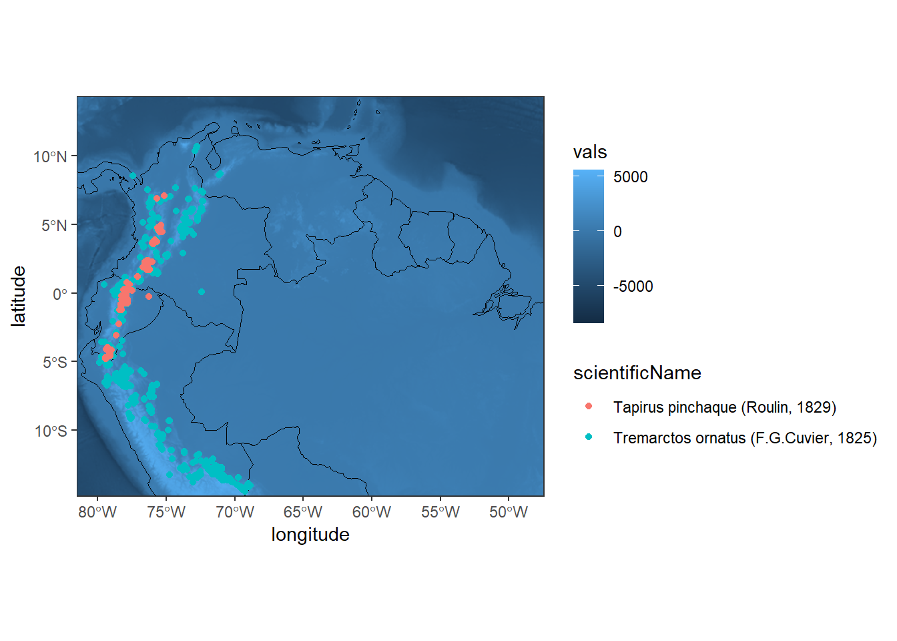
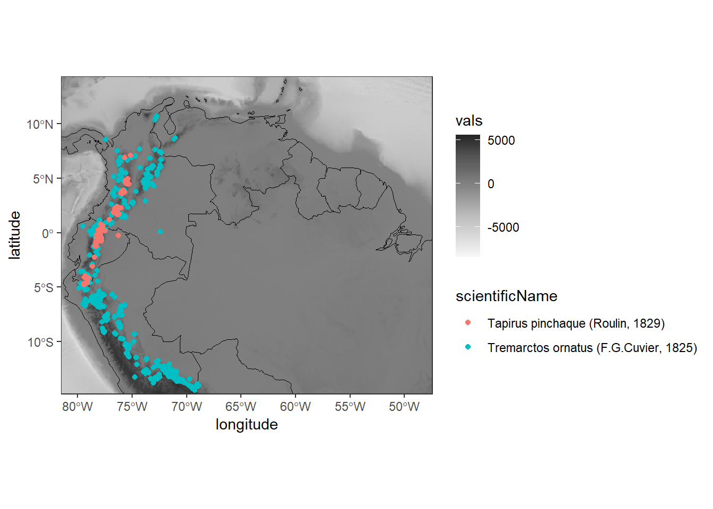

Code
library(mapview)
library(ggplot2)
library(sf)Introducción al procesamiento, visualización y análisis de datos espaciales en R. Parte 2.
Diego J. Lizcano ![]()
Andrés Felipe Suárez-Castro
Comenzamos cargando tres paquetes básicos necesarios para generar nuestros primeros mapas; mapview, sf y ggplot2.
library(mapview)
library(ggplot2)
library(sf)El paquete sf se utiliza para trabajar con datos espaciales y ofrece funciones para leer, escribir y analizar datos espaciales (features en inglés) de una manera sencilla y eficiente.
También utilizaremos el paquete maps para cargar un mapa global. Existen otros paquetes que también funcionan para este propósito, como el paquete rnaturalearth, el cual proporciona un mapa de países de todo el mundo.
library(maps)Ahora podemos cargar el mapa global usando la función map(). Además, transformaremos el objeto world a un simple feature o sf, este representa características simples como registros en un data.frame o tibble (tabla) con una lista-columna de geometrías (punto, linea, poligono, etc) que representan la forma, mas un sistema de coordendas.
world1 <- sf::st_as_sf(map(database = 'world', plot = FALSE, fill = TRUE))
world1Simple feature collection with 253 features and 1 field
Geometry type: MULTIPOLYGON
Dimension: XY
Bounding box: xmin: -180 ymin: -85.19218 xmax: 190.2708 ymax: 83.59961
Geodetic CRS: +proj=longlat +ellps=clrk66 +no_defs +type=crs
First 10 features:
ID geom
Aruba Aruba MULTIPOLYGON (((-69.89912 1...
Afghanistan Afghanistan MULTIPOLYGON (((74.89131 37...
Angola Angola MULTIPOLYGON (((23.9665 -10...
Anguilla Anguilla MULTIPOLYGON (((-63.00122 1...
Albania Albania MULTIPOLYGON (((20.06396 42...
Finland Finland MULTIPOLYGON (((20.61133 60...
Andorra Andorra MULTIPOLYGON (((1.706055 42...
United Arab Emirates United Arab Emirates MULTIPOLYGON (((53.92783 24...
Argentina Argentina MULTIPOLYGON (((-64.54916 -...
Armenia Armenia MULTIPOLYGON (((45.55235 40...Ejercicio
Identifique las principales características del objeto world1:
¿Cuántos atributos y polígonos tiene? ¿Cuál es el sistema de coordenadas? ¿Cuál es su extensión?
Ejecicio extra ¿Cómo reescribiría la función anterior utilizando %>% ?
Ahora veamos el objeto world1 usando la función plot
plot(world1)Ahora podemos generar un plot utilizando el paquete ggplot y los conceptos aprendidos durante la sesión anterior.
En este caso, debemos utilizar geom_sf() con el fin de llamar nuestro objeto sf
ggplot() +
geom_sf(data = world1) El siguiente paso consiste en anadir puntos de distribución de especies sobre nuestro mapa. Para ello, vamos a utilizar los puntos de localidades descargados desde GBIF en la mañana.
library(tidyverse)Para añadir los puntos en nuestro mapa, utilizaremos la función geom_point()
ggplot() +
geom_sf(data = world1) +
geom_point(data = dat_oso_danta_filtrado, aes(x = decimalLongitude, y = decimalLatitude))Note que hemos utilizado ggplot() sin algún argumento dentro de los corchetes. Esto se debe a que trazamos varias capas, cada una con una fuente de datos diferente, por lo que debemos especificar los datos proporcionados a cada geom por separado (data = world1 para geom_sf() y data = dat para geom_point()).
Este mapa se ve bien, pero no es necesario que representemos al mundo entero aquí. Por lo tanto, podemos modificar nuestro mapa estableciendo límites en las coordenadas. Además, podemos cambiar los colores de nuestros objetos.
En primer lugar, necesitamos definir la extensión de nuestros puntos
range(dat_oso_danta_filtrado$decimalLongitude)[1] -79.8566 -65.9310range(dat_oso_danta_filtrado$decimalLatitude)[1] -17.39878 10.67390Estos son los valores que utilizaremos de guía para definir la extensión de nuestro mapa mediante el uso de coord_sf(). Note que vamos a añadir los argumentos xlim y ylim que definen el limite de nuestro mapa
El nuevo mapa con la extensión corregida luce de la siguiente manera:
ggplot() +
geom_sf(data = world1) +
geom_point(data = dat_oso_danta_filtrado, aes(x = decimalLongitude, y = decimalLatitude)) +
coord_sf(xlim = c(-79.8566, -65.9310), ylim = c(-17.39878, 10.67390)) +
labs(y = "latitude", x = "longitude") +
theme_bw()Ejercicio
Genere el mismo mapa pero esta vez coloree los puntos de acuerdo a la especie. Además, cambie el color de los países a verde usando la siguiente opción:
color = “black”, fill = “lightgreen”
Hasta acá hemos aprendido un vistazo general sobre las caracteristicas vectoriales (puntos, lineas, poligonos) de los mapas. Sin embargo, gran parte de los mapas tienen otro tipo de informacion que no es vectorial.
Un ráster es una estructura de datos espaciales (geográficos) que divide una región en rectángulos llamados “celdas” (o “píxeles”) que pueden almacenar uno o más valores para cada una de estas celdas. Esta estructura de datos también se conoce como “cuadrícula” (o grid) y a contrasta con los datos “vectoriales” que se utilizan para representar puntos, líneas y polígonos.
Los objetos ráster, se pueden leer y manipular con el paquete terra. Carguemos ese paquete ahora:
library(terra)La función terra() nos sirve para cargar y manipular objetos raster dentro de R.
Para este ejercicio vamos a descargar un modelo digital de elevación de terreno (DEM) usando el paquete elevatr, el cual descarga la topografia desde Amazon Web Services (AWS). Como fuente podemos usar cualquier mapa sf, en nuestro caso usaremos el mapa de puntos de la danta y el oso el cual convertiremos a sf.
En este caso, cargaremos una capa de elevación para el territorio colombiano.
# definir CRS
projlatlon <- "+proj=longlat +datum=WGS84 +no_defs +ellps=WGS84 +towgs84=0,0,0"
# convertir tabla de puntos a sf
danta_oso_sf <- st_as_sf(x = dat_oso_danta_filtrado,
coords = c("decimalLongitude", "decimalLatitude"),
crs = projlatlon)
library(elevatr)
elevation <- get_elev_raster(danta_oso_sf, z=4) # z define el nivel de zoom
terra::plot(elevation)Tome un tiempo para inspeccionar las principales características del raster, incluyendo su resolución y extensión.
La función plot() del paquete raster crea una primera gráfica bastante decente. Sin embargo, tenga en cuenta que la escala de colores no es tan apropiada para las elevaciones: verde donde las elevaciones son altas y rojo donde son bajas. Además, estos colores predeterminados no serían tan buenos si nuestra audiencia no pudiese ver el color rojo-verde.
Vamos entonces a crear el gráfico anterior usando ggplot. Antes de esto, necesitamos convertir el ráster en una tabla:
dat_grid <-
data.frame(xyFromCell(elevation, 1:ncell(elevation)),
vals = elevation[]) %>%
as_tibble()
head(dat_grid)# A tibble: 6 × 3
x y vals
<dbl> <dbl> <dbl>
1 -90.0 21.9 -39
2 -89.9 21.9 -38
3 -89.9 21.9 -39
4 -89.8 21.9 -39
5 -89.8 21.9 -39
6 -89.8 21.9 -39Ahora podemos incluir el raster en nuestro mapa utilizando la función geom_tile()
ggplot() +
geom_tile(data = dat_grid, aes(x = x, y = y, fill = vals)) +
geom_sf(data = world1, color = "black", fill = NA) +
geom_sf(data = danta_oso_sf, aes(color = scientificName)) +
coord_sf(xlim = c(-80, -49), ylim = c(-13.5, 13)) +
labs(y = "latitude", x = "longitude") +
theme_bw()
Podemos mejorar el mapa anterior cambiando el azul por gris
ggplot() +
geom_tile(data = dat_grid, aes(x = x, y = y, fill = vals)) +
scale_fill_distiller(type = "seq", palette = "Greys",
direction = 1) +
geom_sf(data = world1, color = "black", fill = NA) +
geom_sf(data = danta_oso_sf, aes(color = scientificName)) +
coord_sf(xlim = c(-80, -49), ylim = c(-13.5, 13)) +
labs(y = "latitude", x = "longitude") +
theme_bw()
La función terrain nos permite obtener mapas de la pendiente, el aspecto y la rugosidad, los cuales usaremos mas adelante.
terreno <- terrain(elevation, c( "slope", "aspect", "roughness"))
terreno # nuevo objeto con varios rasterclass : RasterBrick
dimensions : 1011, 1037, 1048407, 3 (nrow, ncol, ncell, nlayers)
resolution : 0.04340482, 0.04340482 (x, y)
extent : -90, -44.9892, -21.93923, 21.94305 (xmin, xmax, ymin, ymax)
crs : +proj=longlat +datum=WGS84 +no_defs
source : memory
names : roughness, slope, aspect
min values : 0, 0, 0
max values : 4453.0000000, 0.3837085, 6.2831853 plot (terreno)En esta sección aprenderemos a extraer valores de un raster utilizando otros objetos espaciales
covariables<- terra::extract (terreno, danta_oso_sf)
head(covariables) roughness slope aspect
[1,] 307 0.01862192 0.01528054
[2,] 413 0.02138133 4.85660231
[3,] 472 0.03176053 1.06784213
[4,] 476 0.03902415 5.74084536
[5,] 884 0.07371204 6.06315362
[6,] 890 0.06135130 2.03976466Ahora adicionemos la informacion de la especie.
dat_mamm<-cbind(covariables, danta_oso_sf$scientificName)
summary(dat_mamm)Ejercicio
Genere un histograma mostrando la distribución de la pendiente y la rugosidad para los registros de cada especie.
El paquete mapview ofrece visualizaciones rápidas de objetos sf y raster de forma interactiva.
library(mapview)
mapview(danta_oso_sf[c("scientificName")])Esperamos que haya disfrutado de este curso. Cubrimos una gran cantidad de territorio: importación de datos, organización y visualización de datos, análisis espaciales exploratorios y mapeo con sf y ráster.
Recuerde que la práctica es fundamental para desarrollar sus habilidades de R, por lo que le recomendamos que intente hacer de R una parte integral de sus flujos de trabajo. Afortunadamente, con la abundancia de recursos disponibles gratuitamente y la inmensa comunidad de usuarios, ¡aprender R nunca ha sido tan fácil!
Escribir código consiste en ensayo error y un 90% buscar la respuesta en Google.
Si busca un problema en la web, como “ggplot remove legend”, normalmente obtendrá una respuesta bastante decente en Stack Overflow o en un sitio similar.
Si la respuesta aún no existe en línea, regístrese en Stack Overflow y pregúntela usted mismo (pero primer dedique tiempo suficiente en buscar … ¡nadie quiere ser etiquetado por duplicar una pregunta existente!).
Otra buena idea es buscar un grupo de apoyo local. El uso de R es una experiencia emocional, la curva de aprendizaje al comienzo es bien empinada, la frustración es común, pero luego de un tiempo la alegría de encontrar una solución puede ayudarnos a persistir. Tener a otras personas para ayudar, o simplemente escuchar sus frustraciones es una gran motivación para seguir aprendiendo R.

@online{j. lizcano2024,
author = {J. Lizcano, Diego and Felipe Suárez-Castro, Andrés},
title = {Introducción Al Procesamiento, Visualización y Análisis de
Datos Espaciales En {R}},
date = {2024-04-12},
url = {https://dlizcano.github.io/spatialdata_lite/},
langid = {en}
}